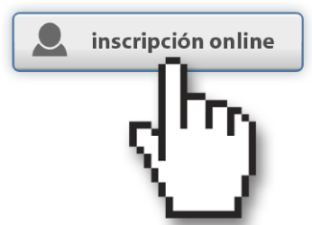

¿QUÉ ES FLISOL?
Es el Festival Latinoamericano de Instalación de Software Libre y actualmente es el evento de difusión de Software Libre más grande en Latinoamérica. Su principal objetivo es promover el uso del software libre, dando a conocer al público en general su filosofía, alcances, avances y desarrollo. Para tal fin, las diversas comunidades locales organizan simultáneamente eventos en los que se instala software libre y además se ofrecen charlas, ponencias y talleres en torno a la filosofía del Software Libre en toda su gama de expresiones: artística, académica, empresarial y social.
¿CUÁNTO CUESTA?
¿A QUIÉN VA DIRIGIDO?
¿QUÉ BENEFICIOS TENGO?
Tanto el ingreso al evento, asi como la asistencia y participación en cualquiera de las actividades es totalmente libre y gratuita.
El evento está dirigido a todo tipo de público: estudiantes, académicos, empresarios, entusiastas, trabajadores, funcionarios públicos y aun personas que no poseen mucho conocimiento informático.
Tendrás la oportunidad de instalar software libre en tu computadora, y tal vez encuentres una alternativa ó solución en software libre para ti, tu empresa, colegio, universidad e incluso, para tu gobierno.
FLISOL BOGOTA 2014 - 10 DE MAYO - IDRD


Este año el Festival Latinoamericano de Instalación de Software Libre -FliSoL- llega a su décima versión, gracias a la iniciativa de las comunidades de Software Libre de Bogotá, con el apoyo de la Alta Consejería Distrital de Tecnologías de la Información y las Comunicaciones -TIC-, la Secretaría de Gobierno y el Instituto Distrital de Recreación y Deporte -IDRD-, entidades comprometidas con el fortalecimiento de lo público a través del Software Libre como parte del tercer eje del Plan de Desarrollo Bogotá Humana. Flisol Bogotá es un evento totalmente incluyente que se distingue de todos los demás eventos de tecnología ya que da a conocer a todo tipo de personas alternativas para no usar software privativo, alternativas de excelente calidad para ser libres, usar los programas y contenidos con el propósito que cada persona requiera, desee o necesite. Es una oportunidad para todas aquellas personas interesadas en conocer más acerca del software libre. Participando es posible entrar en contacto con el mundo del software libre, conocer a otros usuarios, resolver dudas e interrogantes, intercambiar opiniones y experiencias; asistir a charlas y otras actividades programadas.
Objetivo: Dar a conocer el Software Libre de mano de su representante más conocido, GNU con linux, o por medio de la instalación de Software Libre como LibreOffice, GIMP, Firefox y muchos más. Durante el evento se instala de manera gratuita el sistema operativo y las alternativas libres a todas las personas que deseen y puedan llevar sus equipos a las sedes designadas por la directiva del festival. Durante el mismo se ofrecen de manera paralela charlas, ponencias y talleres, sobre temas locales, nacionales y latinoamericanos, relacionadas al Software Libre y al movimiento del mismo nombre. Es importante mencionar, que el objetivo es crear lazos y promover la migración de los usuarios, tanto principiantes como avanzados, al uso del software libre. El evento sirve también para brindar información sobre soluciones de bajo costo pero bastante poderosas a pequeñas y medianas empresas, que van desde un sistema operativo y un software ofimático, pasando por servidores web hasta llegar a implementación de plantas telefónicas.
Históricamente, el FliSoL Bogotá ha sido un punto de encuentro de comunidades, colectivos, estudiantes, organizaciones del sector público, privado y ciudadanía en general, para difundir, visibilizar y aprender acerca de las herramientas y aplicaciones TIC basadas en Software Libre, estándares y licenciamientos abiertos. Durante este Festival se realizarán diversas actividades como talleres, conferencias, distribución de herramientas Open Source e instalación del sistema operativo Linux, siendo éste un espacio para fomentar un ambiente de trabajo colaborativo para el intercambio de experiencias y saberes que giran alrededor de la Cultura Libre.
Dentro de las actividades programadas para esta nueva versión del FliSoL, los estudiantes del Diplomado de Software Libre para el emprendimiento, que se está realizando en la Sede Tecnológica de la Universidad Distrital Francisco José de Caldas, tendrán un espacio en donde podrán compartir sus experiencias sobre los conocimientos adquiridos y presentar sus proyectos formulados durante este programa de formación promovido por la Alta Consejería Distrital de TIC.
Este Festival como muchos otros festivales de cultura libre en el uso del software, no serían posibles sin la existencia de licencias abiertas. Es por esto que en el FliSoL se impulsan licencias como la GPL (General Public License) o Creative Commons, que han abierto las puertas de la computación para que las personas puedan usar, estudiar, modificar y distribuir software libremente.
Finalmente, la Internet ha hecho posible conectar grupos de usuarios y comunidades que trabajan en torno al desarrollo, mantenimiento, y difusión de proyectos de Software Libre, construyendo una nueva historia en el escenario de la Web, a partir de la creación, la socialización y la contribución de saberes, aportando al desarrollo individual y colectivo de las personas en las áreas del conocimiento o campos como el arte, la ingeniería, la academia, el gobierno electrónico y el emprendimiento.
Te invitamos el Sábado 10 de Mayo a este gran evento de Software y Cultura Libre que se realizará en el IDRD, descubre las herramientas alternativas que puedes usar en tu computador, anímate a instalar Linux y aprende a hacer las tareas informáticas de una manera distinta.
Registra tu entrada e imprimela para el ingreso
PROGRAMACION

No te lo pierdas, la entrada es libre.
Lugar: Instituto Distrital de Recreación y Deporte -IDRD-Fecha: 10 de mayo de 2014
Hora: 9:00am - 5:00 pm
Sitio Web: http://flisolbogota.org


.png)